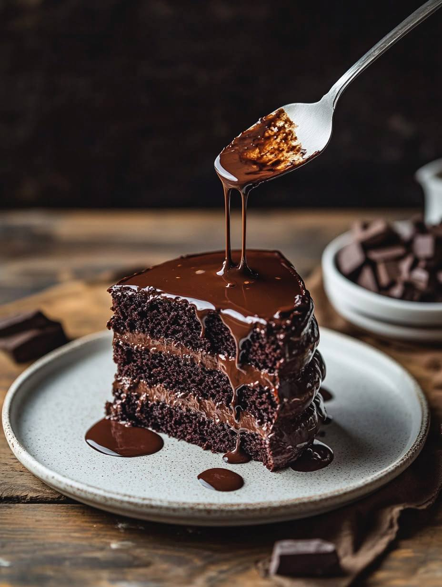

chocolate-cake

مواد لازم:
- آرد - ۲ پیمانه
- تخممرغ - ۳ عدد
- شکر - ۱ پیمانه
- پودر کاکائو - ۴ قاشق غذاخوری
- روغن - نصف پیمانه
- بکینگ پودر - ۱ قاشق چایخوری
- شیر - ۱ پیمانه
مراحل پخت:
- فر را با دمای ۱۸۰ درجه سانتیگراد روشن کنید.
- تخممرغها و شکر را با هم بزنید تا کف کند.
- شیر و روغن را اضافه کرده و هم بزنید.
- مواد خشک را در ظرفی جداگانه مخلوط کرده و سپس به مایه اضافه کنید.
- مایه را در قالب بریزید و به مدت ۴۵ دقیقه در فر قرار دهید.
- پس از پخت، بگذارید خنک شود و سپس سرو کنید.
بازگشت به لیست دستورها